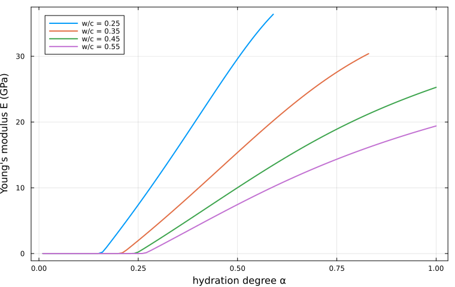
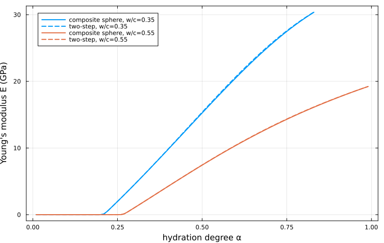

Multiscale elasticity of a hydrating cement paste
Following [43] — and mirroring the corresponding chapter of the Echoes book [42] — this page builds a two-scale micromechanical model of Portland cement paste predicting the effective Young's modulus from the water-to-cement ratio $w/c$ and the hydration degree $\alpha$.
The three ingredients are:
- a self-consistent scheme at the C-S-H scale, whose percolation threshold produces the setting transition;
- a two-step Mori-Tanaka homogenization at the paste scale, for the inner/outer core-shell morphology;
- a Biot poromechanics correction turning drained into undrained moduli.
[43] embed a genuine composite sphere (anhydrous core + inner-hydrate shell) in the outer matrix. A LayeredSphere can now be used directly as an RVE phase — it enters the schemes through its concentration tensors, as in [42] — so the model can be written either way. The two-step form below is kept because it makes each scale explicit; see the last section for the direct composite-sphere version.
Microstructural model
Two C-S-H types coexist at the paste scale:
- Inner (high-density) hydrates — a porous polycrystal of oblate solid bricks (aspect ratio $\omega_i^s \approx 0.12$) around each anhydrous grain. Their porosity $\varphi_i = 0.30$ is fixed throughout hydration.
- Outer (low-density) hydrates — thinner oblate platelets ($\omega_o^s = 0.033$) precipitating in the water-filled space. Their porosity $\varphi_o$ decreases as hydration proceeds.
using MeanFieldHom
using TensND
using LinearAlgebra
using Plots
gr() # headless backend; GKSwstype is set to "100" in make.jl
const ω_i, ω_o, φ_i = 0.12, 0.033, 0.30
C_sol = iso_stiffness_E_nu(71.6, 0.27) # solid C-S-H
C_anhyd = iso_stiffness_E_nu(135.0, 0.3) # anhydrous clinker
C_zero = TensISO{3}(0.0, 0.0) # empty pore
(E_nu(C_sol), k_mu(C_sol))((71.6, 0.27), (51.88405797101449, 28.188976377952752))Powers hydration model and volume fractions
The Powers model [44] gives the anhydrous fraction $f_a$ and the total porosity $f_p$:
\[f_a = \frac{0.32\,(1-\alpha)}{w/c+0.32}, \qquad f_p = \frac{w/c-0.17\,\alpha}{w/c+0.32}, \qquad \alpha_{\max} = \min\!\left(1,\, \frac{w/c}{0.4175}\right)\]
The Tennis-Jennings model [45] splits the solid hydrates between low- and high-density C-S-H through the mass fraction
\[m_{LD} = 3.017\,\alpha\,w/c - 1.347\,\alpha + 0.538 .\]
fa(wc, a) = 0.32 * (1 - a) / (wc + 0.32)
fp(wc, a) = (wc - 0.17a) / (wc + 0.32)
amax(wc) = min(1.0, wc / 0.4175)
mLD(wc, a) = clamp(3.017a * wc - 1.347a + 0.538, 0.0, 1.0)
function volume_fractions(wc, α)
_fa, _fp = fa(wc, α), fp(wc, α)
fhs = 1 - _fa - _fp # total solid hydrates
fis = (1 - mLD(wc, α)) * fhs # inner solid
fos = mLD(wc, α) * fhs # outer solid
fip = φ_i / (1 - φ_i) * fis # inner porosity
fop = _fp - fip # outer porosity
fi = fis + fip # inner phase (solid + pores)
φ_o = (fop + fos) > 1.0e-12 ? fop / (fop + fos) : 0.0
return (; fa = _fa, fis, fos, fip, fop, fi, φ_o)
end
v = volume_fractions(0.45, 0.8 * amax(0.45))
(fa = round(v.fa, digits = 4), fi = round(v.fi, digits = 4), φ_o = round(v.φ_o, digits = 4))(fa = 0.0831, fi = 0.3298, φ_o = 0.5261)Scale 0 — self-consistent estimate of the C-S-H phases
Both hydrate types are porous polycrystals: oblate solid bricks and spherical pores, homogenized by the self-consistent scheme. Its percolation threshold is what makes the paste set.
function C_porous_sc(φ, ω)
r = RVE(:SOLID)
add_matrix!(
r, Ellipsoid(1.0, 1.0, ω), Dict(:C => C_sol);
symmetrize = IsoSymmetrize()
)
add_phase!(
r, :PORE, Ellipsoid(1.0, 1.0, 1.0), Dict(:C => C_zero);
fraction = φ
)
return homogenize(r, SelfConsistent(), :C)
end
C_inner = C_porous_sc(φ_i, ω_i)
(E_inner = round(E_nu(C_inner)[1], digits = 3),)(E_inner = 31.003,)The inner hydrates are fixed once and for all. The outer ones stiffen as $\varphi_o$ drops; below the percolation threshold they carry no stiffness at all:
for φ in (0.2, 0.4, 0.6, 0.8, 0.9)
E = E_nu(C_porous_sc(φ, ω_o))[1]
println("φ_o = ", rpad(φ, 5), " E_outer = ", round(E, digits = 4))
endφ_o = 0.2 E_outer = 43.9774
φ_o = 0.4 E_outer = 22.6375
φ_o = 0.6 E_outer = 9.3638
φ_o = 0.8 E_outer = 1.5553
φ_o = 0.9 E_outer = 0.0The thinner the platelets, the lower the porosity at which the solid skeleton loses connectivity — this is precisely the mechanism that sets the setting threshold in the paper.
Scale 1 — cement paste
function C_paste(wc, α)
v = volume_fractions(wc, α)
(v.fop < 0 || v.φ_o >= 1) && return nothing
C_out = C_porous_sc(v.φ_o, ω_o)
k_mu(C_out)[1] <= 1.0e-9 && return nothing # outer not percolating yet
f_inc = v.fa + v.fi
f_inc < 1.0e-12 && return C_out
# Step 1 — core-shell inclusion: anhydrous grains in inner hydrates.
r1 = RVE(:INNER)
add_matrix!(r1, Ellipsoid(1.0, 1.0, 1.0), Dict(:C => C_inner))
add_phase!(
r1, :ANH, Ellipsoid(1.0, 1.0, 1.0), Dict(:C => C_anhyd);
fraction = v.fa / f_inc
)
C_comp = homogenize(r1, MoriTanaka(), :C)
# Step 2 — composite inclusions in the outer matrix.
r2 = RVE(:OUTER)
add_matrix!(r2, Ellipsoid(1.0, 1.0, 1.0), Dict(:C => C_out))
add_phase!(
r2, :INC, Ellipsoid(1.0, 1.0, 1.0), Dict(:C => C_comp);
fraction = f_inc
)
return homogenize(r2, MoriTanaka(), :C)
end
println(" α/αmax: 0.1 0.3 0.5 0.7 0.9")
for wc in (0.25, 0.35, 0.45, 0.55)
print("w/c = ", wc, " : ")
for a in (0.1, 0.3, 0.5, 0.7, 0.9)
C = C_paste(wc, a * amax(wc))
print(rpad(C === nothing ? "—" : round(E_nu(C)[1], digits = 2), 8))
end
println()
end α/αmax: 0.1 0.3 0.5 0.7 0.9
w/c = 0.25 : 0.0 1.69 11.63 22.42 32.79
w/c = 0.35 : 0.0 2.06 10.92 20.03 27.76
w/c = 0.45 : 0.0 2.11 10.02 17.33 23.02
w/c = 0.55 : 0.0 1.05 7.45 13.12 17.58The three predictions of [43] are reproduced:
- a setting threshold: the paste carries no stiffness at low $\alpha$, because the outer phase has not percolated yet;
- a monotonic stiffening up to $\alpha_{\max}$;
- a lower asymptotic stiffness for higher $w/c$, reflecting the larger residual porosity at full hydration.
Plotting the Young's modulus against the hydration degree makes all three visible at once — the flat zero-stiffness plateau before percolation, the rise, and the $w/c$-ordered asymptotes:
α_plot = 0.0:0.01:1.0
plt = plot(;
xlabel = "hydration degree α", ylabel = "Young's modulus E (GPa)",
legend = :topleft, framestyle = :box, size = (760, 480),
)
for wc in (0.25, 0.35, 0.45, 0.55)
αs = Float64[]
Es = Float64[]
for a in α_plot
a > amax(wc) && continue
C = C_paste(wc, a)
C === nothing && continue
push!(αs, a)
push!(Es, E_nu(C)[1])
end
plot!(plt, αs, Es; label = "w/c = $wc", lw = 2)
end
plt
Undrained moduli
Ultrasonic measurements probe the undrained moduli of a saturated paste. For a porous medium with a homogeneous isotropic solid of bulk modulus $k_s$, Biot theory gives
\[b = 1 - \frac{k^{hom}}{k_s}, \qquad M = \frac{k_s}{b - \varphi}, \qquad k^u = k^{hom} + M\,b^2, \qquad \mu^u = \mu^{hom} .\]
k_s = k_mu(C_sol)[1]
function undrained(C, φ)
k, μ = k_mu(C)
(k < 1.0e-12 || φ <= 0) && return C
b = 1 - k / k_s
M = k_s / max(b - φ, 1.0e-12)
return iso_stiffness(k + M * b^2, μ)
end
C_inner_u = undrained(C_inner, φ_i)
function C_paste_undrained(wc, α)
v = volume_fractions(wc, α)
(v.fop < 0 || v.φ_o >= 1) && return nothing
C_out = C_porous_sc(v.φ_o, ω_o)
k_mu(C_out)[1] <= 1.0e-9 && return nothing
C_out_u = undrained(C_out, v.φ_o)
f_inc = v.fa + v.fi
f_inc < 1.0e-12 && return C_out_u
r1 = RVE(:INNER)
add_matrix!(r1, Ellipsoid(1.0, 1.0, 1.0), Dict(:C => C_inner_u))
add_phase!(
r1, :ANH, Ellipsoid(1.0, 1.0, 1.0), Dict(:C => C_anhyd);
fraction = v.fa / f_inc
)
C_comp = homogenize(r1, MoriTanaka(), :C)
r2 = RVE(:OUTER)
add_matrix!(r2, Ellipsoid(1.0, 1.0, 1.0), Dict(:C => C_out_u))
add_phase!(
r2, :INC, Ellipsoid(1.0, 1.0, 1.0), Dict(:C => C_comp);
fraction = f_inc
)
return homogenize(r2, MoriTanaka(), :C)
end
println("w/c α/αmax E drained E undrained")
for wc in (0.35, 0.55), a in (0.3, 0.6, 0.9)
Cd = C_paste(wc, a * amax(wc))
Cu = C_paste_undrained(wc, a * amax(wc))
Ed = Cd === nothing ? NaN : E_nu(Cd)[1]
Eu = Cu === nothing ? NaN : E_nu(Cu)[1]
println(rpad(wc, 7), rpad(a, 9), rpad(round(Ed, digits = 2), 12), round(Eu, digits = 2))
endw/c α/αmax E drained E undrained
0.35 0.3 2.06 2.99
0.35 0.6 15.53 20.43
0.35 0.9 27.76 33.13
0.55 0.3 1.05 1.48
0.55 0.6 10.43 13.52
0.55 0.9 17.58 21.28The undrained moduli are systematically higher, the gap being largest at low hydration degree where the pore network is still well connected. As $\varphi \to 0$ the Biot coefficient $b \to 0$ and the two coincide.
Direct composite-sphere form
Because a LayeredSphere is a first-class RVE phase, the paste scale can also be written exactly as in [43]: one composite inclusion made of an anhydrous core coated by the inner hydrates, embedded in the outer matrix. The radius ratio follows from the volume-fraction constraint
\[\frac{R_a}{R_{\text{ref}}} = \left(\frac{f_a}{f_a+f_i}\right)^{1/3}.\]
The declared :C property of such a phase is irrelevant — the moduli live in the layers — so any placeholder is accepted.
function C_paste_composite(wc, α)
v = volume_fractions(wc, α)
(v.fop < 0 || v.φ_o >= 1) && return nothing
C_out = C_porous_sc(v.φ_o, ω_o)
k_mu(C_out)[1] <= 1.0e-9 && return nothing
f_inc = v.fa + v.fi
f_inc < 1.0e-12 && return C_out
Ra = (v.fa / f_inc)^(1 / 3)
Ra < 1.0e-6 && return nothing # no anhydrous core left (α → 1)
sphere = LayeredSphere((Ra, 1.0), (C_anhyd, C_inner))
r = RVE(:OUTER)
add_matrix!(r, Ellipsoid(1.0, 1.0, 1.0), Dict(:C => C_out))
add_phase!(r, :INC, sphere, Dict(:C => C_anhyd); fraction = f_inc)
return homogenize(r, MoriTanaka(), :C)
end
println(" α/αmax: 0.3 0.5 0.7 0.9")
for wc in (0.35, 0.55)
print("w/c = ", wc, " : ")
for a in (0.3, 0.5, 0.7, 0.9)
C2 = C_paste_composite(wc, a * amax(wc))
Cs = C_paste(wc, a * amax(wc))
s = (C2 === nothing || Cs === nothing) ? "—" :
string(round(E_nu(C2)[1], digits = 2), "/", round(E_nu(Cs)[1], digits = 2))
print(rpad(s, 11))
end
println()
end α/αmax: 0.3 0.5 0.7 0.9
w/c = 0.35 : 2.06/2.06 10.86/10.9219.88/20.0327.67/27.76
w/c = 0.55 : 1.05/1.05 7.44/7.45 13.08/13.1217.56/17.58Each cell shows composite sphere / two-step. The two agree closely at low inclusion fraction and diverge as it grows, the composite sphere being the morphologically faithful one: the two-step form loses the geometric constraint that the anhydrous core sits inside the inner-hydrate shell.
The same comparison over the whole hydration range, for two water-to-cement ratios:
α_plot = 0.0:0.01:1.0
plt = plot(;
xlabel = "hydration degree α", ylabel = "Young's modulus E (GPa)",
legend = :topleft, framestyle = :box, size = (760, 480),
)
for (wc, col) in ((0.35, 1), (0.55, 2))
αs, Ecs, Ets = Float64[], Float64[], Float64[]
for a in α_plot
a > amax(wc) && continue
C2 = C_paste_composite(wc, a)
Cs = C_paste(wc, a)
(C2 === nothing || Cs === nothing) && continue
push!(αs, a)
push!(Ecs, E_nu(C2)[1])
push!(Ets, E_nu(Cs)[1])
end
plot!(plt, αs, Ecs; label = "composite sphere, w/c=$wc", lw = 2, color = col)
plot!(plt, αs, Ets; label = "two-step, w/c=$wc", lw = 2, ls = :dash, color = col)
end
plt